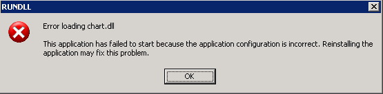

This is the documentation for Mumble, version x.x.
[...]
Mumble is available as a .ZIP archive. You can download the latest release of this version from http://mumble.com/downloads/. There's no installation process: just unpack the archive anywhere that's convenient to you.
Once unpacked, you'll find the following:
mumble-x.x.x\ mumble.dll the Mumble DLL examples\C\ a brief test case include\ C header file manual\ this document, plus supporting files Microsoft.VC80.CRT\ runtime libraries used by Mumble pyMumble\ example Python interface
You'll find working with this document, and in particular the Python example, easiest if you keep all these files together.
Tip
If you don't intend either to copy / move mumble.dll after you've unpacked it, or to redistribute an application you've built using Mumble, you can skip this small print.
Mumble needs access to Microsoft's C Runtime and Standard C++ Libraries. If it can't find them it simply won't run. You'll see something like this:
These runtime libraries can be either installed to a central location on your computer or — as in the .ZIP archive — present in a Microsoft.VC80.CRT\ directory alongside the Mumble DLL.
Central location
If the runtime libraries have already been installed on your machine (by the installer of some other application, say) then you can move or copy the Mumble DLL as you wish, and it will continue to work.
Private copy
Otherwise, if you move or copy the DLL you should keep a copy of Microsoft.VC80.CRT\ alongside it.
Redistribution
If you redistribute an application based on Mumble then you will need to revisit this issue. Advice on Redistributing Visual C++ libraries will be found on the MSDN website: here.
How much work this is will depend on the language you're working in.
Python
The pyMumble\ directory contains a Python (version 2.7) package which uses the ctypes module to connect to Mumble's external interface.
I'll use pyMumble in the sections that follow, to demonstrate the features of Mumble.
You can build your application directly on top of this package; see below for an example. So you might choose to skip reading Library infrastructure and go straight on to Working with Mumble.
Mumble is a 32-bit library; you'll need a 32-bit Python installation.
C
The distribution includes a header file which declares the library's external interface, the functions which implement it, and a (brief) sample application.
You'll need to define your side of the interface. I recommend that you work through Library infrastructure and implement each section in turn. Once you can get the tests to pass, move on to Working with Mumble.
Common Lisp
Talk to us. Depending on your implementation, we can probably offer you a native interface for part or all of the library.
Anything else
I suggest adapting the header file to your language — in other words, you need to be able to call every exported function — and then proceeding as for C above. Let us know how you get on.
The short answer is: [...]
Don't forget to include the runtime libraries in your distribution.
This section covers everything you need to know about driving Mumble, other than [...]. I'll cover starting and stopping the library, function calls, error handling, the structures Mumble uses, and memory and how to free it.
If you plan to drive Mumble from Python then you can probably skip all this and go straight on to Working with Mumble.
Otherwise, you'll have to start by implementing your own infrastructure layer, as described below. The C example might help, as should the following files in the Python interface:
- invoke.py
- Function call wrappers: extract results, check for errors
- lib.py
- Stubs for all calls into the DLL
- objects.py
- Implementations of the objects that Mumble uses
In the following I'll use extracts from the Python interface to demonstrate how to drive the library. I'll assume some familiarity with Python's ctypes foreign function library.
The library's calling convention is stdcall.
The Mumble library initialises itself automatically, the first time you call any function in its interface. If you find this distasteful, you can initialise the library explicitly by calling mumble_init().
Somewhat more important is to close the library gracefully when you're finished it, by calling mumble_close(); failure to do may result in a warning message.
The Python interface arranges for this in connect.py, which also sets the global dll to point to the ctypes shared library object. Every export from the library is now a member of the dll object (for example, we can invoke the library function mumble_init() by calling dll.mumble_init from pyMumble).
connect.py, along with everything else you'll need to go with it, is loaded via mumble.py:
>>> from pyMumble import mumble >>>
All Mumble functions return a result code of type mumble_res_t. They indicate success by returning MUMBLE_RES_OK, which is defined to be zero; they signal errors by returning MUMBLE_RES_FAIL, which is non-zero, and retaining a string describing the error. You can retrieve the most recent error string by calling mumble_last_error().
In the Python example, the function check in invoke.py examines the return value of a function call into the library. If this value is not OK (zero) then a MumbleError is raised.
OK = 0 def check(func, *args): """ Apply func to its args, checking the result code. """ result = func(*args) if result != OK: raise MumbleError()
Library functions which need to return some value in addition to the result code do so by reference: they take a pointer as their first argument and write through it.
Still in invoke.py, the function wrapper val creates just such a pointer. This pointer is prepended to func's argument list, the library is invoked, the result code checked, and the result is extracted. The wrapper void has the same form but is for calls which don't return a useful result.
def val(func): """ Return a function which calls func with an additional pointer argument, checks the result, and dereferences the pointer. """ def invoker(*args): pointer = ctypes.c_void_p() check(func, ctypes.byref(pointer), *args) return pointer.value return invoker def void(func): """ Return a function which calls func, checking the result. """ def invoker(*args): check(func, *args) return invoker
Mumble functions take arguments of the following types:
Handles are only ever generated by the library. When you have no further use for a handle (for instance: when removing a [...] from the system) you should call mumble_remove_objects().
Aggregate values — strings, records (for example, a pair of integers representing a [..]) and arrays (for example, a list of [...]) — might be generated by either the library or your application.
The contents of any aggregate value created by your application, passed into Mumble and retained there — for example, the string to be [...], or an array of records describing new objects to be added to the system — are copied by the library before your call returns. So you may immediately recycle the memory associated with such values.
Any aggregate value created within the library and passed to your application as return data will be retained by Mumble, until you declare that you have no further use for it by calling the library function mumble_free(). If you free a sequence (i.e. a record or array) which itself contains any aggregate values, then these values will be freed recursively.
The Python interface has a simple stub for invoking mumble_free():
def free(pointer): invoke.void(dll.mumble_free)(pointer)
Note that mumble_free() does not free handles, or release them in any sense. Freeing an array of objects releases the resources associated with the array itself and not those of the objects. (See instead mumble_remove_objects().)
Warning
The library is designed to catch and recover from errors but it cannot be totally resilient to bad data: the only way for it to interpret an aggregate value (string, record, array) is to dereference the corresponding pointer. If the pointer is invalid this may lead to an unhandled exception which could crash either the library or your application. If you're working in Python the following minimal check from invoke.py is suggested.
def plausible_address(address): """ Return the address, checking that it refers to valid memory. This is only the most basic of checks. The address of a compound record might pass this test but what it points to might be rubbish, and we can't check for that without going into a description of record layout. The test works by loading one byte from the given address. If there's anything wrong with the address, Python will handle the error and raise one of its own Exceptions. """ ctypes.string_at(address, 1) return address
Let's see how errors might be handled. The MumbleError exception defined in invoke.py demonstrates:
Raising this exception calls mumble_last_error() and reports the result. As corner cases, the exception checks whether (a) there actually was any error in the first place, (b) it was possible to report the error and (c) it was possible to mumble_free() the error report. In the last case a warning note is tacked onto the head of the report rather than risking a chain of recursive errors.
class MumbleError(Exception): def __init__(self): string = ctypes.c_char_p(None) error = dll.mumble_last_error(ctypes.byref(string)) if error != OK: self.string = 'Mumble reports an error, ' \ + 'and an error reporting the error.' else: value = string.value if value: self.string = value.decode('utf-8') if not config.show_backtrace: self.string = self.string.splitlines()[0] if dll.mumble_free(string) != OK: # Today isn't turning out very well. (Not that I # was seriously expecting to end up on this branch.) warning = '*** Warning: Mumble was unable to free ' \ + 'the mumble_last_error string. ***' self.string = warning + '\n\n' + self.string else: self.string = 'How did this happen? There was no error in Mumble.' def __str__(self): return self.string
(You'll note that I haven't made use of the bundling functions check, val or void here. That's because any failure they encountered would recursively raise another MumbleError, which could rapidly spiral out of control.)
The string returned from mumble_last_error() describes the most recent error signalled by the library. If this was a pilot error then you'll get a one line description of the problem. If alternatively some exceptional condition (say: division by zero) was caught then a backtrace will be included. This might be longer and less edifying than you care for; MumbleError uses the configuration variable show_backtrace from config.py to decide whether to show you the backtrace.
If there is no error to report, mumble_last_error() returns a null pointer.
Let's go under the hood. I'll bypasss all the bundling and checking functions (check etc.) and make a series of low-level calls, at the Python prompt, directly into the DLL:
>>> import ctypes >>> from pyMumble.invoke import dll >>> dll.mumble_free(0xdeadbeef) -1 >>> string = ctypes.c_char_p(None) >>> dll.mumble_last_error(ctypes.byref(string)) 0 >>> string c_char_p('Pointer to 0xdeadbeef is invalid and cannot be freed.\r\n') >>> dll.mumble_free(string) 0 >>> dll.mumble_last_error(ctypes.byref(string)) 0 >>> string c_char_p(None) >>>
The C equivalent to the above might be based on the following fragments:
#define ASSERT_OK(form) \ {mumble_res_t res = (form); assert(res == MUMBLE_RES_OK);} #define ASSERT_FAIL(form) \ {mumble_res_t res = (form); assert(res == MUMBLE_RES_FAIL);} mumble_aggregate_t pointer; pointer.string = (char*)0xdeadbeef; ASSERT_FAIL(mumble_free(pointer)); ASSERT_OK(mumble_last_error(&(pointer.string))); assert(strcmp(pointer.string, "Pointer to 0xdeadbeef is invalid and cannot be freed.\r\n") == 0); ASSERT_OK(mumble_free(pointer)); ASSERT_OK(mumble_last_error(&(pointer.string))); assert(pointer.string == 0);
Working from Python, we'll need to be able to switch between ctypes instances and their memory addresses. (With the foreign interfaces of other languages, the corresponding solution might look very different. In C it'll be trivial.)
The pyMumble function dereference_address in objects.py takes one argument which it treats as the memory address of a ctypes.c_uint. It dereferences this address and returns the integer. Dereferencing 0 returns None.
The function address_of returns the address of a ctypes instance's underlying data.
In the following example we create a ctypes array which contains an integer and the address of a ctypes string. By dereferencing the address of the array we are able to recover the integer; by dereferencing the address of the following word in memory we recover the address of the string.
>>> from pyMumble import objects >>> s = ctypes.c_char_p('hello') >>> x = ctypes.pointer((ctypes.c_uint *2)(99, objects.address_of(s))) >>> objects.address_of(s) 39344980L >>> objects.address_of(x) 38708808L >>> objects.dereference_address(38708808L) 99L >>> objects.dereference_address(38708808L + 4) 39344980L >>> hex(objects.dereference_address(_)) '0x6c6c6568L' >>>
Tip
Watch out for the Python garbage collector!
>>> ctypes.c_char_p('goodbye') c_char_p('goodbye') >>> objects.address_of(_) 39343764L >>> objects.dereference_address(_) 0L >>>
In this case we haven't retained a pointer to the ctypes string. Its data has already been reclaimed and is no longer accessible to us.
A record is a sequence of Mumble values in memory.
Both the number of the values which constitute a record, and their various types, are determined by the context in which that record is used.
As a very simple example of records in pyMumble, I'll get values into and out of a record used to hold a co-ordinate pair. In this case the record consists of two values and both happen to have the same type: signed integers. I'll use the functions construct and deconstruct which are fully documented in objects.py and which basically do what I did the long way round in the dereferencing example above.
>>> from pyMumble import objects >>> location = (101, 234) >>> x = objects.construct(location) >>> x <pyMumble.objects.LP_c_ulong_Array_2 object at 0x024EA620> >>> objects.deconstruct(objects.address_of(x), 2) (101L, 234L) >>>
An array is another form of sequence of Mumble values in memory .
This time the number of values is not determined by context but must be passed as part of the array. The types of an array's members are always the same.
Under the hood, arrays are implemented as records. The first member of the record is the array's length; the remaining members are the array's values.
Two examples, the first in C. The macro CHECK is defined in mumble.h; it verifies that a library call has returned MUMBLE_RES_OK.
#define MUMBLE_RECORD_SIZE(n) (offsetof(mumble_record_s, values) \ + (n) * sizeof(mumble_value_t)) #define MUMBLE_ARRAY_SIZE(n) (offsetof(mumble_array_s, values) \ + ((n)+1) * sizeof(mumble_value_t)) [...]
The second example uses pyMumble:
>>> import ctypes >>> from pyMumble import objects >>> s = map(ctypes.c_char_p, ['hello', 'goodbye']) >>> x = objects.pack(s) >>> x <pyMumble.objects.LP_c_ulong_Array_3 object at 0x022B9620> >>> unwrap = lambda(name): (ctypes.cast(name, ctypes.c_char_p).value) >>> objects.unpack(objects.address_of(x), unwrapfun=unwrap) ['hello', 'goodbye'] >>>
Pack and unpack are implemented in objects.py, in terms of construct and deconstruct above. Note that by default, unpack is designed to pass its array argument to mumble_free() after the array's members have been extracted; this allows the Mumble DLL to reclaim the memory pointed to by the array (and by any aggregate values which it contains). Overriding this behaviour is unlikely to be useful to you if the array originated inside the library; once you've unpacked an array there is no further use for it.
In Mumble, objects are represented by handles. The library provides functions — [...], etc. — for constructing each of the various types of object, and each of these functions returns a handle.
In pyMumble we define classes corresponding to each of the Mumble object types — these are all subclasses of MumbleObject which is defined in objects.py — and create instances of these classes to correspond to each new handle:
_objects = {0:None} class MumbleObject(object): def __init__(self, handle): _objects[handle] = self self.handle = handle def box(self): return self.handle def _discard(self): handle = self.handle del _objects[handle] self.handle = None def unbox(handle): return _objects[handle]
We can now use arrays, box and unbox to demonstrate the use of mumble_remove_objects():
def remove_objects(objects): box = lambda(x): x.box() invalids = unpack(lib.remove_objects(pack(objects, box)), unbox) for invalid in invalids: invalid._discard()
Note incidentally that:
In this example I use unbox as a debugging aid. Suppose I'm faced with the following error:
pyMumble.invoke.MumbleError: Wibble, with #<Mumble MumbleObject handle=0x20053748>), which is not permitted.
Then unbox can identify the object with handle 0x20053748:
>>> mumble.objects.unbox(0x20053748) <Mumble MumbleObject handle=0x20053748> >>>
Before moving on, you should conduct a test equivalent to the following. It will ensure that the library is working, that you are communicating with the library successfully and in particular that you are packing and unpacking arrays correctly.
In this test we:
>>> import ctypes >>> @ctypes.WINFUNCTYPE(ctypes.c_uint, ctypes.c_uint) ... def return_handle(handle): ... return handle ... >>> from pyMumble.invoke import dll, void, val >>> obj_1 = val(dll.mumble_new_object)() >>> obj_2 = val(dll.mumble_new_object)() >>> objs = [obj_1, obj_2] >>> objs [537280600, 537280728] >>> val(dll.mumble_return_object)(obj_1) 537280600 >>> objects.unpack(val(dll.mumble_return_array)(objects.pack(objs))) [537280600L, 537280728L] >>> ctypes.c_bool(val(dll.mumble_invoke_return_object)(return_handle, obj_1)) c_bool(True) >>>
See also communications_test in objects.py.
This section covers Mumble's higher level functionality and in particular how to [...]
If you plan to drive Mumble from Python then you can simply use the classes and functions referenced in this section. They are all defined in mumble.py.
Mumble is a 32-bit library; you'll need a 32-bit Python installation.
>>> from pyMumble import mumble >>>
Otherwise, you'll have to implement equivalents to these functions along with the library infrastructure discussed earlier.
I won't document every possible way to raise an exception while working with this code. Most MumbleErrors have fairly obvious causes. Working with discarded objects is the primary culprit. (The C functions reference is more thorough about error conditions.)
The objects with which Mumble deals are: [...]
The library's calling convention is stdcall.
The following types are declared in mumble.h.
mumble_aggregate_t
An aggregate value is a string, record, or array. Note that these are all pointer types.
The contents of any aggregate value created by your application, passed into Mumble and retained there — for example, the string to be drawn on some window's titlebar — are copied by Mumble before your call returns. So you may immediately recycle the memory associated with such values.
The contents of any aggregate value created within Mumble and passed to your application will be retained by Mumble until you declare that you have no further use for them. See the library function mumble_free() for this.
typedef union mumble_aggregate_t { char *string; /* UTF-8 */ struct mumble_record_s *record; struct mumble_array_s *array; } mumble_aggregate_t;
mumble_array_t
An array is the memory address of a sequence of values whose length is not known in advance. The constituent types are all the same and are determined by context. For example, [...]. The first item in any array is always the number of remaining items. (If the [...] has three [...], then the array consists of four values, the first of which is the number 3.)
Compare with records, whose length is known in advance, but whose constituent types need not be the same.
typedef struct mumble_array_s *mumble_array_t; typedef struct mumble_array_s { mumble_ulong_t length; mumble_value_t values[1]; /* all the same members of mumble_value_t */ } mumble_array_s;
mumble_handle_t
A handle denotes a [...] within the library. Each such object is assigned a handle when Mumble creates it; and that handle can be used to unambiguously reference the object.
typedef mumble_ulong_t mumble_handle_t;
Handles can only be generated by the library. When you have no further use for a handle (for instance: when removing a [...] from the system) you should call mumble_remove_objects().
mumble_long_t mumble_ulong_t
All integers are passed as one of these two types.
#include <stdint.h> typedef int32_t mumble_long_t; typedef uint32_t mumble_ulong_t;
mumble_res_t
All mumble functions return a value of type mumble_res_t. This is an alias for int32_t:
typedef mumble_long_t mumble_res_t; enum { MUMBLE_RES_OK = 0, /* success */ MUMBLE_RES_FAIL = -1 /* failure */ };
If a call into Mumble has failed, you should call mumble_last_error() to find out why.
mumble_record_t
A record is the memory address of a sequence of values whose length and constituent types (which need not all be the same) are determined by the context in which it's being passed. For example, the co-ordinates of a given [...] might be passed as a record of two integers.
Compare with arrays, whose length is not known in advance, but whose constituent types must be the same.
typedef struct mumble_record_s *mumble_record_t; typedef struct mumble_record_s { mumble_value_t values[1]; /* maybe different members of mumble_value_t */ } mumble_record_s;
mumble_value_t
mumble_value_t is a union of all other Mumble types. The values passed within arrays and records are of type mumble_value_t. All values passed as arguments to library functions are of type mumble_value_t (or, for functions which return some value in addition to the result code, mumble_value_t*).
typedef union mumble_value_t { mumble_ulong_t uinteger; mumble_long_t integer; mumble_handle_t handle; mumble_aggregate_t aggregate; } mumble_value_t;
The following functions are declared in mumble.h. For sample calls into the DLL see also mumble.c and test.c.
|
|
mumble_res_t mumble_close(void)
Make the Mumble library quit.
If this function is not called before your process exits, the Mumble library might issue a warning message about not being unloaded cleanly ("Idle process was still alive when DLL was unloaded...").
See the _on_exit() function in connect.py for an example of calling this function automatically when Python is quit, provided the DLL is initialised at the time.
mumble_res_t mumble_free(mumble_aggregate_t pointer)
Instruct the Mumble library to free the memory referenced by pointer.
Pointer may be any aggregate value which originated in the Mumble library. If it references a sequence (i.e. a record or array), then any aggregate values within that sequence will be freed recursively.
If pointer isn't a valid reference (for instance, if it's just some number you made up) then an error is signalled.
mumble_res_t mumble_init(void)
Initialise the Mumble library.
Calling this function is optional, in that calling any function in the Mumble interface will automatically ensure that Mumble has been initialised. If however you prefer to initialise the library explicitly then you're welcome to do so.
mumble_res_t mumble_invoke_return_object(bool *success,
mumble_handle_t(*)(mumble_handle_t) funct,
mumble_handle_t object)
Ask Mumble whether applying the function to the handle returns the same handle.
The only conceivable purpose of this function is to allow you to conduct communication tests with the library while you're porting to it. It answers the questions: are you passing function pointers correctly? and are you successfully interpreting handles to pre-existing objects?
Your function funct should take one argument, a handle. It should interpret this handle as a Mumble object, in whatever way is appropriate to your application; then it should convert that object back to a handle and return this new handle. If the application's data model is simply to work with raw handles, then it's fine for this function to just return its argument; doing that otherwise would be defeating the purpose of the test.
Mumble decodes the handle argument (object) into one of its own objects. It calls the function with that object's handle. It expects the result of this function call to be a handle which it can decode and compare with the original object, returning true if they were the same.
mumble_res_t mumble_last_error(char **error_string)
Return a string describing the last error to occur within the Mumble library.
The string consists of a brief error message possibly followed by a verbose stack backtrace (note for Python users: with most recent call first).
If you're getting an error you don't understand, please forward it without delay to mumble@ravenbrook.com and we'll help you interpret it if the problem was at your end, or get a fix to you if the fault was inside Mumble.
If no error has occurred in this session, or at least none since a previous call to mumble_last_error(), then mumble_last_error() returns a null pointer.
When you're done with the error string you should mumble_free() it.
See the MumbleError Exception class in invoke.py for a cautious example.
mumble_res_t mumble_new_object(mumble_handle_t *object)
Return the handle for a new, undifferentiated, Mumble object.
The only conceivable purpose of such an object is to allow you to conduct communication tests with the library while you're porting to it. See mumble_return_object(), mumble_return_array() and mumble_invoke_return_object() for test functions, and communications_test in objects.py for a complete example.
To create more interesting Mumble objects, consider: [...]
When you're done with the object you should mumble_remove_objects() an array containing its handle.
mumble_res_t mumble_raise_error(char *error_string)
Signal an error whose report is error_string. The string should have originated in a mumble_advise_condition callback; it will be automatically passed to mumble_free() by this call.
See also mumble_request_error().
mumble_res_t mumble_remove_objects(mumble_array_t *result, mumble_array_t array)
Invalidate objects within Mumble and permit memory to be recycled.
Array may contain any number of handles for [...]. Once a handle has been removed the corresponding Mumble object becomes invalid: you should no longer communicate with Mumble about that object and if you attempt to do so an error will be signalled.
[...]
mumble_remove_objects() returns a new array itemising all the handles whose objects have been invalidated. [...] When you're done with this array you should mumble_free() it.
mumble_res_t mumble_request_error(mumble_handle_t object, char *error_string)
Cause an error to be signalled. If object is null the error will come straight back (via MUMBLE_RES_FAIL); if it's a windowing display handle then the error will occur in that display's thread; if it's any other object then a new thread will be created and the error will occur in that thread; in both of these two cases the mumble_advise_condition callback will be invoked.
Error-string is any text of your choosing.
The only conceivable purpose of this function is to allow you to conduct tests with the library while you're porting to it. It helps answer the question: are you handling errors correctly?
mumble_res_t mumble_return_array(mumble_array_t *result, mumble_array_t array)
Return a fresh array, containing the same handles as this one.
The only conceivable purpose of this function is to allow you to conduct communication tests with the library while you're porting to it. It answers the question: can you pack and unpack arrays correctly?
The argument should be an array of handles. Mumble unpacks the array to get at the handles, decodes the handles to obtain a sequence of its own objects, and from this packs a fresh array of those objects' handles. As with mumble_return_object(), if array isn't a valid array or its constituent handles handles, then an error is signalled. However the onus is on the application to check that interpreting the array as a memory address will not be problematic.
When you're done with the returned array you should mumble_free() it.
mumble_res_t mumble_return_object(mumble_handle_t *result, mumble_handle_t object)
Return the object's handle.
The only conceivable purpose of this function is to allow you to conduct communication tests with the library while you're porting to it. It answers the question: are you recording new handles correctly?
This function isn't totally trivial: Mumble decodes the handle into one of its own objects and then returns that object's handle. If your handle isn't a valid handle (for instance, if it's just some number you made up) then Mumble can't process it and an error is signalled.
mumble_res_t mumble_set_callbacks(mumble_handle_t object, mumble_array_t callbacks)
Establish callbacks in this object.
The object argument is either the handle of an object or null; callbacks is an array of two-element records, each containing the name of one of the documented callbacks and either a function pointer to be called when Mumble wants to invoke that callback, or a null pointer to remove that callback.
If object is null then each callback set (or removed) applies to all objects for which that callback has not been set explicitly.
It is not an error for Mumble to attempt to invoke a callback which isn't currently set: in this case nothing happens. If, for example, if there were a callback called mumble_frobnicated and you didn't want that callback to do anything, you might simply choose not to set that callback. For any callback which returns a value, I will document what happens if the callback isn't set.
The following callbacks are declared in mumble.h. For how to set and unset callbacks, and what happens if an unset callback is invoked, see mumble_set_callbacks().
void mumble_advise_condition(mumble_handle_t object, char *error_string)
If an error occurs during a call to one of the library functions then an error is signalled.
If an error occurs at some other time then the option of returning the value MUMBLE_RES_FAIL isn't available — there's no function call from which to return anything. Instead, this callback is invoked.
If the error occurred in a thread associated with one of the objects, then object is that object's handle (otherwise object is null).
The error_string is of the same form as the reports returned by calls to mumble_last_error().
You have two choices when programming your application to receive this callback.
[...]
[...]
CLAUDE: The Common Lisp Library Audience Expansion Toolkit
Copyright (c) 2009-2013, Ravenbrook Limited.
All rights reserved.
Redistribution and use in source and binary forms, with or without modification, are permitted provided that the following conditions are met:
Redistributions of source code must retain the above copyright notice, this list of conditions and the following disclaimer.
Redistributions in binary form must reproduce the above copyright notice, this list of conditions and the following disclaimer in the documentation and/or other materials provided with the distribution.
THIS SOFTWARE IS PROVIDED BY THE COPYRIGHT HOLDERS AND CONTRIBUTORS "AS IS" AND ANY EXPRESS OR IMPLIED WARRANTIES, INCLUDING, BUT NOT LIMITED TO, THE IMPLIED WARRANTIES OF MERCHANTABILITY AND FITNESS FOR A PARTICULAR PURPOSE ARE DISCLAIMED. IN NO EVENT SHALL THE COPYRIGHT HOLDER OR CONTRIBUTORS BE LIABLE FOR ANY DIRECT, INDIRECT, INCIDENTAL, SPECIAL, EXEMPLARY, OR CONSEQUENTIAL DAMAGES (INCLUDING, BUT NOT LIMITED TO, PROCUREMENT OF SUBSTITUTE GOODS OR SERVICES; LOSS OF USE, DATA, OR PROFITS; OR BUSINESS INTERRUPTION) HOWEVER CAUSED AND ON ANY THEORY OF LIABILITY, WHETHER IN CONTRACT, STRICT LIABILITY, OR TORT (INCLUDING NEGLIGENCE OR OTHERWISE) ARISING IN ANY WAY OUT OF THE USE OF THIS SOFTWARE, EVEN IF ADVISED OF THE POSSIBILITY OF SUCH DAMAGE.